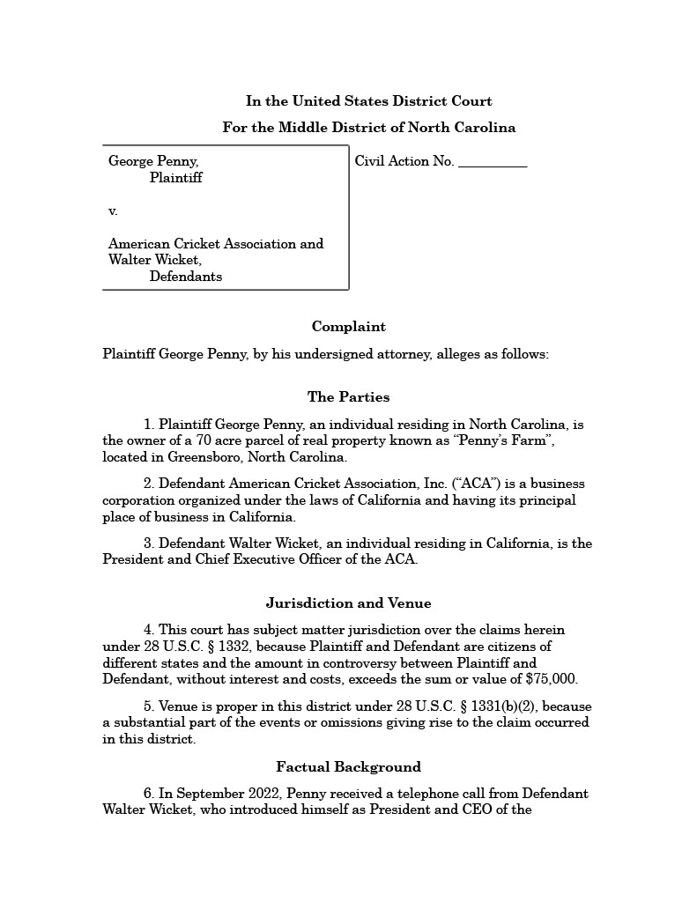
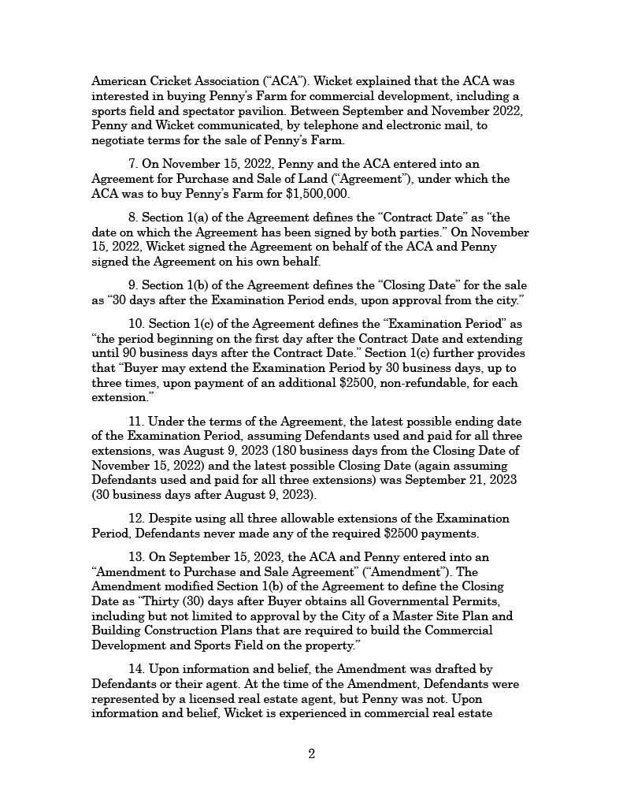
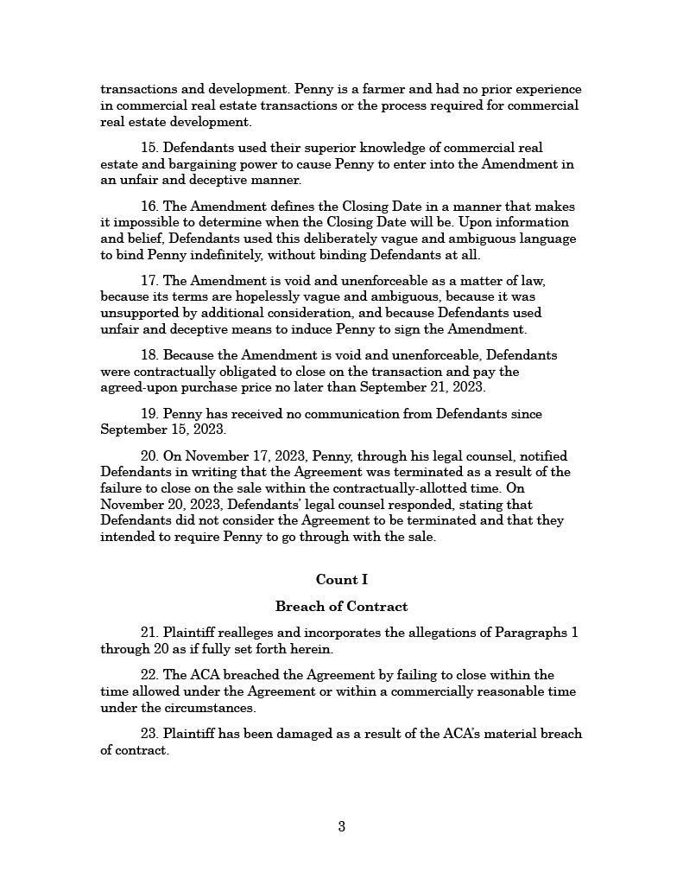
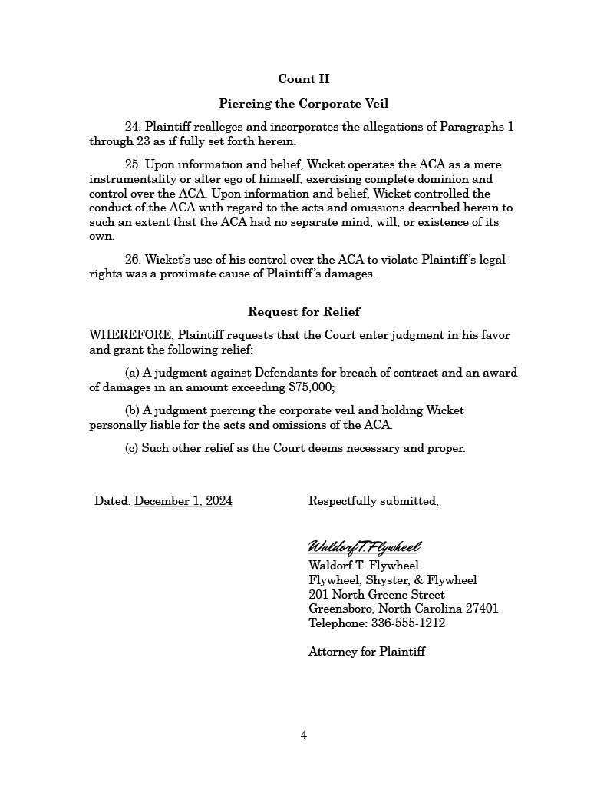

Practice Exam Question 9
Pleadings
The American Cricket Association (“ACA”) is a professional sports league established two years ago. Walter Wicket, a venture capitalist and cricket fanatic, founded the ACA and is the President and CEO.
The ACA will hold its inaugural season in the summer of 2024, with eight teams scheduled to compete. To ensure that every team has a home field suitable for professional-level cricket, the ACA is developing new cricket grounds in each city. The ACA will own those facilities and lease them to the teams.
The Gate City Googlies, based in Greensboro, North Carolina, are one of the teams in the ACA. In November 2022, the ACA entered into a contract with George Penny to buy Penny’s 70 acre farm in Greensboro as a site for the Googlies cricket ground. Last week, Penny filed a suit against the ACA and Wicket in the U.S. District Court for the Middle District of North Carolina. The complaint (see below) alleges that the ACA breached the contract by failing to close on the sale, and seeks to hold Wicket personally liable for the alleged breach.




In response to the complaint, Wicket files a motion under FRCP Rule 12(b)(6) to dismiss the claim seeking to hold him personally liable for the alleged breach of contract.
Ordinarily, corporate shareholders are not personally liable for a breach of contract by the corporation. However, where “the corporation is so operated that it is a mere instrumentality or alter ego of the sole or dominant shareholder and a shield for his activities in violation of law”, the equitable remedy of “piercing the corporate veil” allows a plaintiff to hold the shareholder personally liable for the corporation’s breach. “Veil piercing” requires more than just majority or complete ownership of the corporation’s stock. The plaintiff must show that the shareholder “exercises complete domination, not only of finances, but of policy and business practice in respect to the transaction attacked so that the corporate entity as to this transaction had at the time no separate mind, will or existence of its own.” Relevant factors include:
- Disregard of corporate formalities, such as failing to file annual reports with the state, failing to keep corporate records, or making corporate decisions without involvement or approval by the board of directors;
- Intentional undercapitalization (providing the corporation with inadequate assets) or siphoning (transferring assets out of the corporation) that leaves the corporation unable to pay operating expenses, debts, and liabilities;
- Failure to respect the separate personality of the corporation, such as commingling of corporate and personal funds, or personal use of corporate property.
Should the court dismiss the “Veil Piercing” claim against Wicket? (Assume that the breach of contract claim against the ACA would withstand a motion to dismiss and do not address that issue. Also assume that the court has personal jurisdiction over each defendant and subject matter jurisdiction over each claim.)
Model Answer
Under FRCP Rule 8(a)(2), a complaint must contain “a short and plain statement of the claim showing that the [plaintiff] is entitled to relief”. A defendant may challenge the sufficiency of a complaint with a motion to dismiss under Rule 12(b)(6), for “failure to state a claim upon which relief can be granted”.
The Supreme Court has adopted a “plausibility” standard to determine whether a claim satisfies Rule 8(a)(2) and a two-step analysis for a Rule 12(b)(6) motion: (1) assume that all factual allegations in the complaint are true, while disregarding any allegations that merely state a legal conclusion; (2) assess whether the alleged facts, together with any inferences plausibly supported by those facts, are sufficient to establish the defendant’s liability. In making that assessment, a court may draw on common sense and experience, weighing any inferences on which the claim relies against alternative inferences under which the defendant would not be liable.
In Twombly, the Court applied this standard to dismiss an antitrust conspiracy claim against various telecom service providers. The complaint alleged that the defendants charged similar prices and refrained from offering services in geographic regions already served by other providers. The complaint further alleged that the defendants did so pursuant to an agreement to restrain competition. The Court assumed that the factual allegations about the defendants’ behavior were true. But the court treated the allegation that the defendants acted pursuant to an agreement as conclusory, because it merely recited the “agreement” element of an antitrust claim, without providing any facts about the alleged agreement itself. To assess whether the existence of an illegal agreement was a plausible inference from the factual allegations about the defendants’ behavior, the Court considered the alternative inference that the defendants independently (and lawfully) acted in response to market competition. In the Court’s view, that alternative explanation was more plausible and the plaintiffs needed something more than mere “parallel conduct” (which is not, in itself, illegal) to overcome it.
In this case, Penny contends that “Wicket operates the ACA as a mere instrumentality or alter ego of himself, exercising complete dominion and control over the ACA.” As in Twombly, this allegation merely recites an element of the veil piercing claim and is thus not entitled to the presumption of truth. Treating that allegation as a legal conclusion, the question is whether the factual allegations in the complaint are sufficient to make Wicket’s exercise of “complete dominion and control over the ACA” a plausible inference. The the complaint contains detailed allegations about the dealings between Wicket and Penny in connection with the Agreement. But there are no factual allegations at all about Wicket’s supposed control of the ACA.
As in Twombly, there is a more plausible alternative inference: Wicket acted on behalf of the ACA in his capacity as CEO. Even if the complaint alleged that Wicket was the majority shareholder, that alone would not be sufficient to overcome the “innocent” alternative inference. Just as establishing the existence of an illegal agreement in Twombly needed something more than just allegations of “parallel conduct”, establishing the degree of control required to pierce the corporate veil requires something more than just majority or complete ownership of the corporation’s stock. To satisfy Rule 8(a)(2), Penny should have included factual allegations pertaining to the factors cited in the question, e.g. that the ACA failed to file corporate reports or keep records, that Wicket made decisions without the board’s involvement or approval, that the corporation was intentionally undercapitalized, or that Wicket co-mingled corporate and personal assets or made personal use of corporate property. Absent any such allegations, the inference of control is not plausible and the complaint thus fails to state a veil piercing claim.